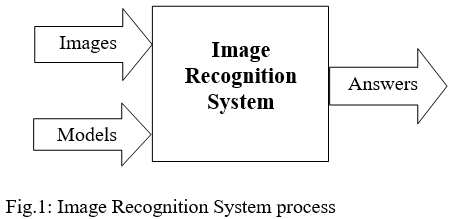

A survey of Deep Learning in Apple Sorting.
In recent decades, more researchers have devoted their attention and effort to Machine Learning (ML) and Computer Vision to improve it substantially and become more feasible to apply in various industries. The development opens many possibilities to apply it in various areas of Agriculture where are seldom seen utilizing high-tech machinery in production. In the image recognition realm, there are several proposed models could be applied to identify and classify fruits in farms. This research is a study report of recent proposals of ML and corresponding experiments in helping toward grueling task of fruit grading.
Machine Learning is known as an area of artificial intelligence (AI) which study computer algorithms to improve automatically for systems. A practical application case of machine learning is image recognition where the system takes in image datasets and predefined model rules as the input and produces desired answers, depicted as below:

All image recognition systems are comprised of two tasks: image classification and object localization. Image classification is the task to assign a class label to an image while object localization is to determine and draw a boundary around object(s) in the image. By applying recent advancement of Deep Learning (DL) in terms of accuracy and performance, these systems can yield more practical ideals to facilitate industries.
One of the problems in fruit-packaging is quality control, as known as fruit grading, since it is labor-intensive and prone to human errors. This step involves determining ripeness, shape, size and other conditions of fruits. The problem mentioned could be resolved by utilizing modern neural network architectures of DL to automate process with high accuracy results. Due to the particularities of plants and fruits, a proposed approach for one species may not fit in with others. This study focuses on the applications on apple.
Applying computer vision in quality control of plant and fruit could save huge number of manual efforts. There are several approaches proposed to deal with challenges in the field such as light condition, background color or time consuming while getting better accurate score.
A system has been built up recently by ML to detect and grade multiple fruits automatically [1]. After preprocessing, the algorithms extract color values and multiple features from images and passes to the classifier to discriminate fruit types and grade them in terms of quality. The study obtained certain accuracy score. However, it is worthwhile to try ensemble techniques or transfer learning from pre-trained models to improve results.
An exemplar of using Deep Convolutional Neural Networks (CNN) is classify and sort fruit, including apple [2]. The proposed method applies the transfer learning technique from the pre-trained model Inception V3 to classify and grade apples into four grades. The classifier runs on a paired of GPU for real time result. The overall classification score is reported at more than 99%. It is no doubt that applying new DL models could obtain comparable accuracy. The more challenging of the research is grading where more explicit criterions and appropriate approach must be defined.
Building a system to detect apple detects, Siddiqi experimented by transfer learning with YOLO and SSD, new object detection frameworks without regional proposal computation [3]. Even though the result obtained not as expected, the idea could be considered for other similar tasks or further improvement. The key information is the rotten areas, parts of the image. Without regional proposals, models are not practical and less accurate in this grading task.
Another application of DL is the approach with a new proposed model INAR-SSD for real time detection of apple leaf diseases [4]. The application performance reaches 78.80% mean average precision while detecting five types of diseases.
The development of DL gets many complex tasks done simply, faster with higher accuracy compared to using traditional computer vision techniques. It opens more potential applications in agriculture. However, in order to deal with any specific task, a proper DL architecture must be used in an appropriate approach.
[1] A. Bhargava and A. Bansal, "Automatic Detection and Grading of Multiple Fruits by Machine Learning," Food Analytical Methods, vol. 13, no. 3, pp. 751-761, 2020/03/01 2020, doi: https://doi.org/10.1007/s12161-019-01690-6
[2] A. Pande, M. Munot, R. Sreeemathy, and R. V. Bakare, "An Efficient Approach to Fruit Classification and Grading using Deep Convolutional Neural Network," in 2019 IEEE 5th International Conference for Convergence in Technology (I2CT), 29-31 March 2019 2019, pp. 1-7, doi: https://doi.org/10.1109/I2CT45611.2019.9033957
[3] R. Siddiqi, "Automated apple defect detection using state-of-the-art object detection techniques," SN Applied Sciences, vol. 1, no. 11, p. 1345, 2019/10/05 2019, doi: https://doi.org/10.1007/s42452-019-1393-4
[4] P. Jiang, Y. Chen, B. Liu, D. He, and C. Liang, "Real-Time Detection of Apple Leaf Diseases Using Deep Learning Approach Based on Improved Convolutional Neural Networks," IEEE Access, vol. 7, pp. 59069-59080, 2019, doi: https://doi.org/10.1109/ACCESS.2019.2914929